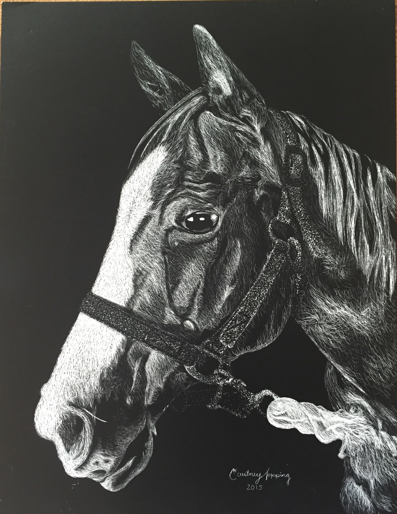

About Me: Courtney Topping
A Brief Introduction
I'm 20 years old (as of recntly since my birthday is February 4th!), born and raised in London Ontario. I'm a second year in the MTP (Media Theory and Production) collaborative program with Western University. I chose this program because being computer savy has always been a goal of mine and I love learning how to naviagte the digital world affectively. Below I've attached a few pictures of some of my hobbies. I love makeup and creating looks as to me, it is just another art form, and art is something that has always been a passion of mine. As you might be able to guess by the attached pieces. I also love horses, as again you may be able to guess since theyre fetaured most frewuently in my art. I have been riding for 9 years and it is truly one of my favouite things to do.
Makeup Looks

Me and My Horses
